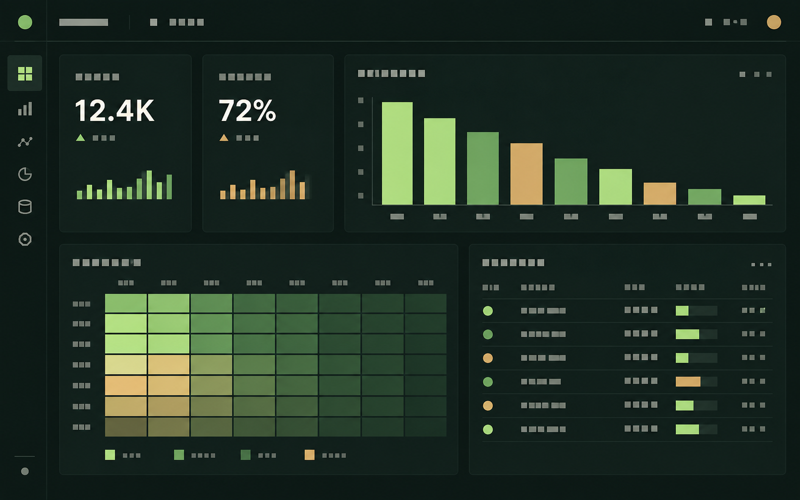

Excel
Reporting, analysis and finance operations work.
IntermediateData analyst, Caen, France
I turn data into useful decisions and practical templates, while exploring responsible ways AI can speed up the work.

Before moving into data analysis, I spent 17 months at Jones Lang LaSalle in Dubai as a Debt Controller and Assistant Financial Analyst, coordinating accounts receivable and accounts payable reporting for the CFO across Saudi Arabia, Egypt, Morocco, India, and Poland. That experience built a habit I bring to every project. I check the numbers before trusting them.
I am an analyst interested in work where clean data, transparent methods, and useful business questions matter equally.
Reporting, analysis and finance operations work.
IntermediateData modelling, dashboards, DAX and Power Query.
Working knowledgeQuerying and preparing data.
Working knowledgeCleaning, exploration and visualisation with pandas and NumPy.
Working knowledgeData visualisation, one project.
Working knowledgeTechnical assessment exposure.
One exposureCompared property prices across Calvados communes using three years of official French government data.
Studied 5,839 customers to understand who buys most often, who spends the most, and who may need attention.
Built a Power BI dashboard to track response targets, revenue, and team performance.
Used Excel to identify sales trends, top customers, and regional performance.
Used Tableau to explore bike use, weather impact, and seasonal patterns in London.
Analysed Zara sales data and built a Power BI dashboard for sales insights.
Group project. I cleaned about 945,000 rows of cycling data, looked for patterns, documented the work, and created Python charts.
Excel template / available now
An Excel template that helps freelancers, small agencies, and small businesses decide which overdue customer to contact first.